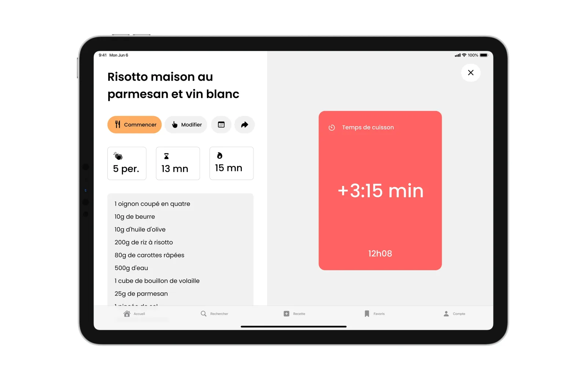

Magicook est un concept de refonte de l’application Magimix. J’ai imaginé une interface sur tablette pour accompagner la découverte et la préparation de recettes en cuisine.
Contexte et objectif
Le concept propose de trouver une recette par thème ou par saison, de reprendre une préparation en cours et d’avancer étape par étape. Il explore aussi la personnalisation et le partage des recettes.
Le projet en images

Choisir une recette
Un accueil organisé par sélections et un accès direct à la recette en cours.

Préparer les ingrédients
La fiche rassemble les ingrédients, le nombre de personnes et les durées de préparation et de cuisson.

Peser
Un écran de balance accompagne la préparation des ingrédients.

Suivre les étapes
Une instruction à la fois, avec les actions pour revenir à l’étape précédente ou poursuivre la recette.

Suivre la cuisson
Le temps restant est mis en avant pendant la cuisson.

Signaler le dépassement
La maquette distingue l’état de dépassement du temps de cuisson.

Adapter ses recettes
L’interface prévoit la modification et la sauvegarde des recettes : température, étapes et actions de préparation.
Ce que j’en retiens
Les maquettes couvrent tout le parcours, du choix de la recette au suivi de la cuisson. J’ai organisé l’information selon le moment de la préparation : les ingrédients en amont, une seule instruction à la fois pendant la recette, le temps restant pendant la cuisson. En cuisine, on a les mains prises et peu d’attention disponible : l’interface doit se lire d’un coup d’œil.